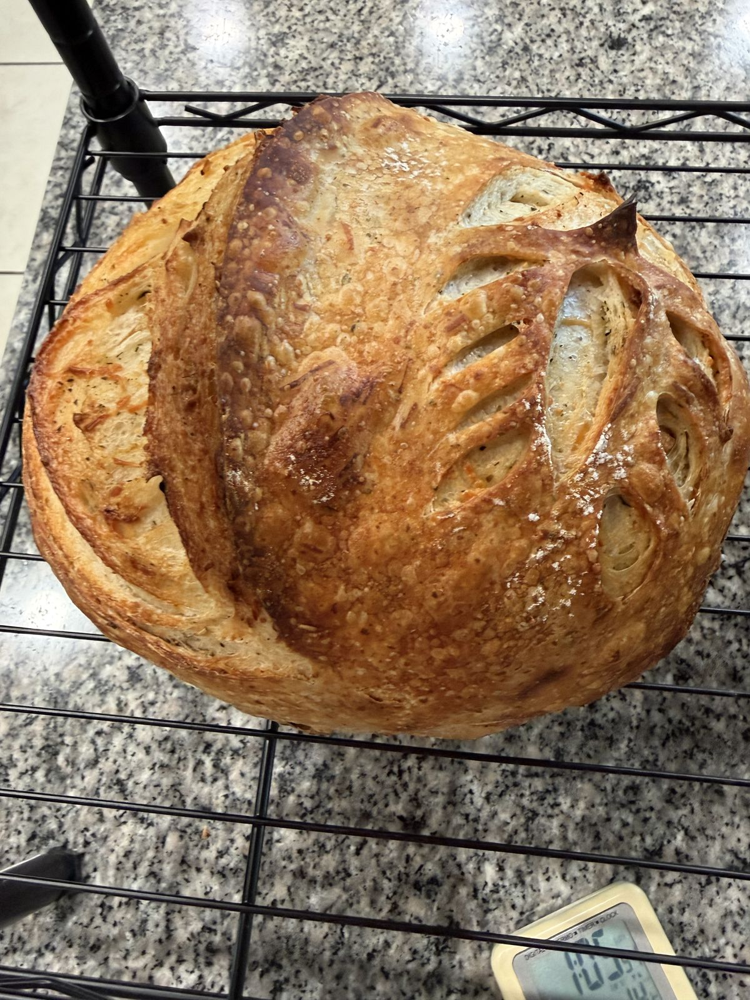
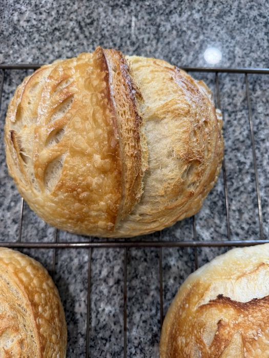
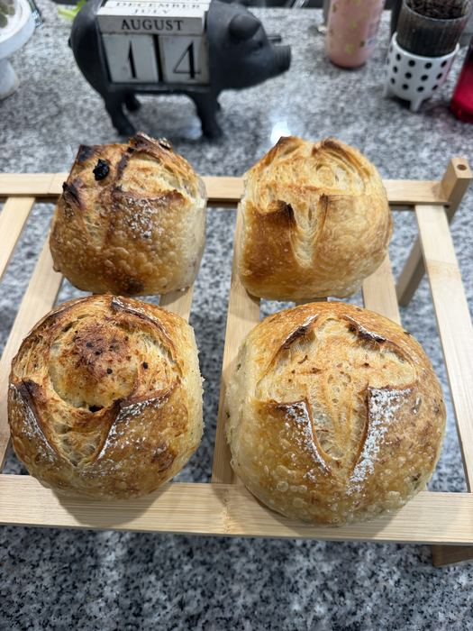
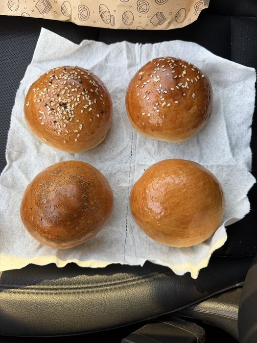

Real sourdough bread, baked the slow way at Forest Haven Farm
No commercial yeast, no shortcuts. Just farm-grown grain, a 10-year-old starter, and a 48-hour ferment — baked in small batches every week and shared with our neighbors.

Fresh from the ovenBaked with patience, not shortcuts
Farm-Grown Grain
Wheat and rye grown and stone-milled close to home, so every loaf tastes like where it came from.
Long Fermentation
A 48-hour cold ferment breaks the grain down slowly for a deeper flavor and an easier-to-digest loaf.
Small Batches Only
We bake what our community needs each week — nothing mass-produced, nothing sitting on a shelf.
A look at what we're baking



Follow the daily bake on Instagram
@foresthavenfarm — behind-the-scenes reels of the starter, the farm, and the oven.
A few favorites from the menu
Classic Country Boule
Our everyday loaf — crackling crust, open airy crumb, tangy but balanced.
Rosemary & Sea Salt Focaccia
Farm rosemary, flaky salt, olive oil — baked in sheet pans and cut to order.
Sesame Sourdough Rolls
Soft naturally leavened dinner rolls, topped with toasted sesame & poppy seed.
“The best sourdough I've had outside of a real French bakery — and it's baked twenty minutes from my house. Worth every bit of the pre-order wait.”
Reserve your loaf before Saturday's bake
We bake to order in small weekly batches, so pre-ordering guarantees your bread is set aside with your name on it.